Transbay Transit Center Roof Garden
A 5.4-acre public park suspended above a transit centre.환승센터 위에 떠 있는 5.4에이커 공원.

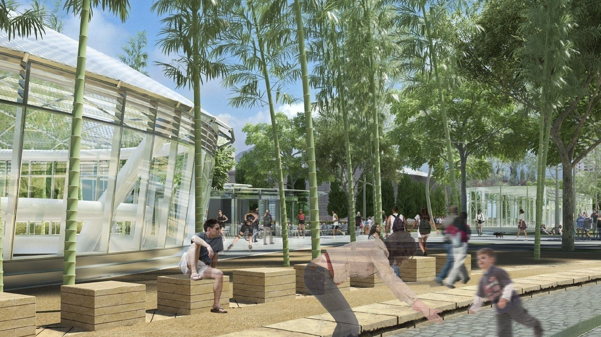
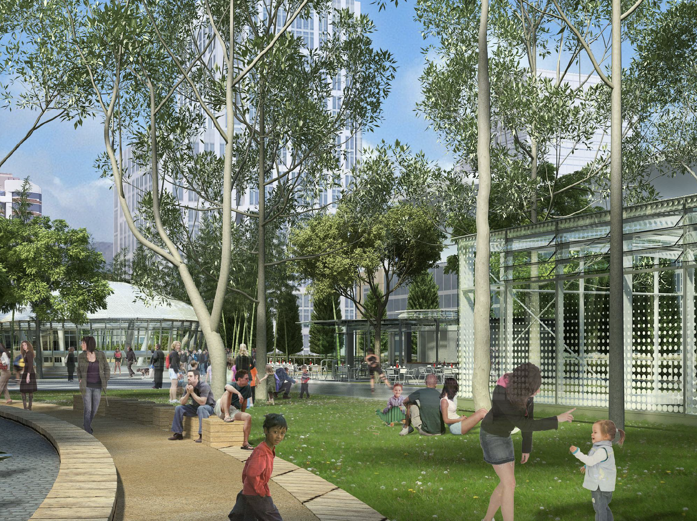
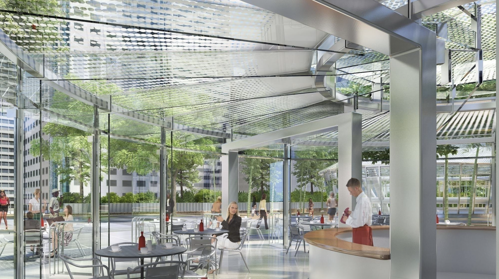
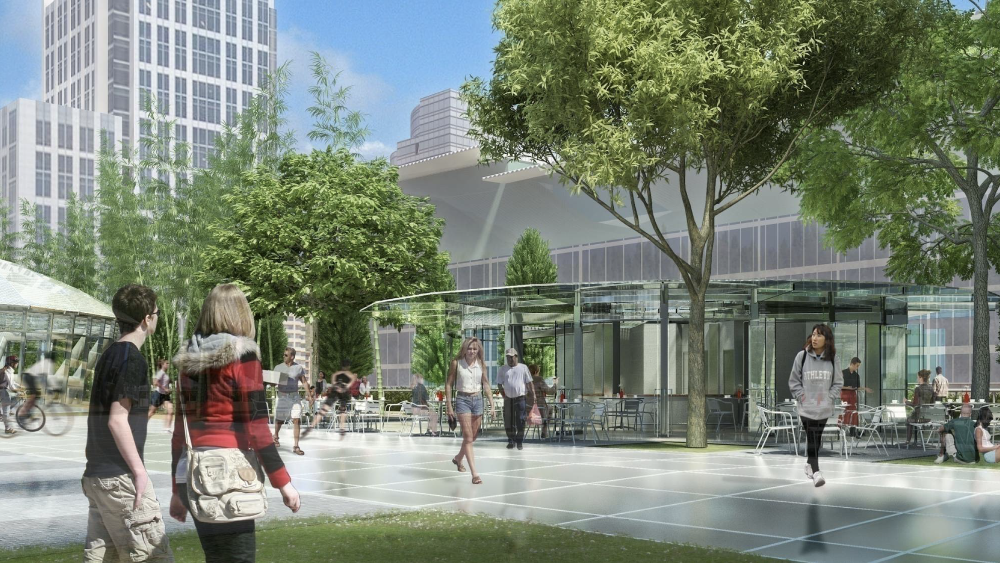
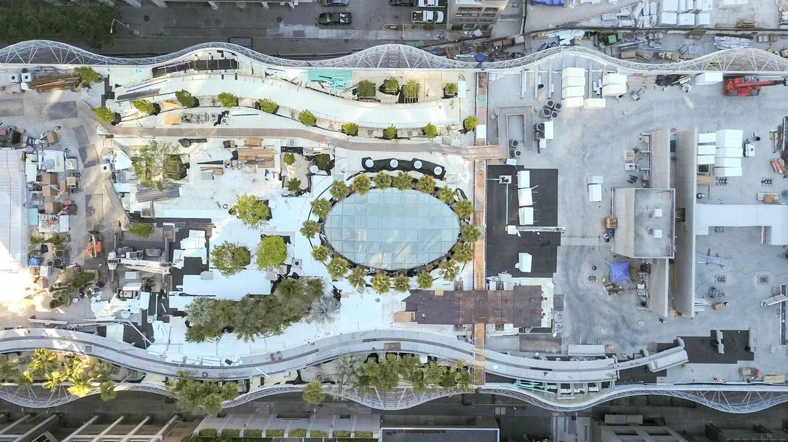
- Client
- PWP Landscape Architecture
- Location
- San Francisco, California
- Year
- 2016
- Role
- Summer Intern, Landscape Architect
- Scope
- Renderings, palm garden planning, tree selection
Rendering production, planning for the palm garden, and tree selection.
렌더링 제작, 팔밍가든 계획, 수종 선정을 맡았습니다.
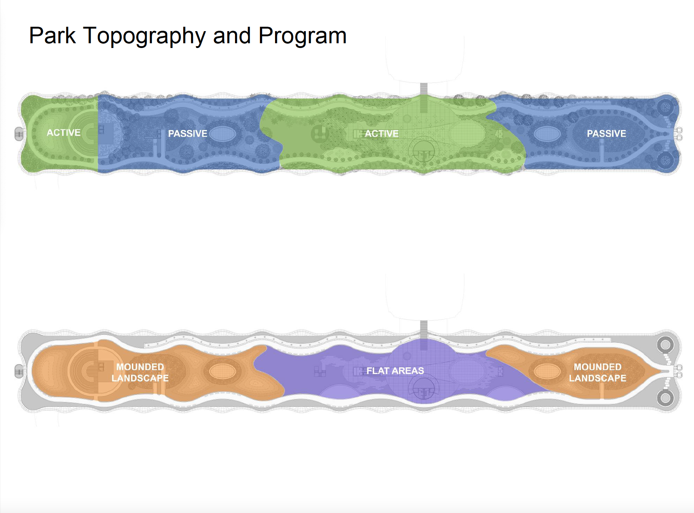
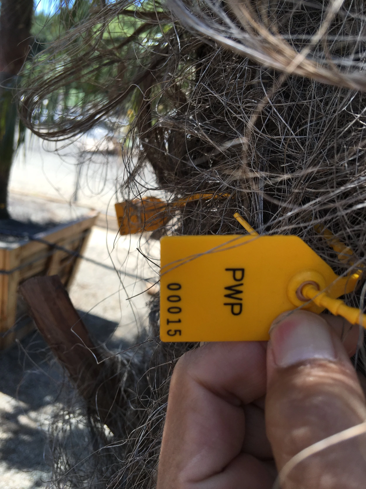
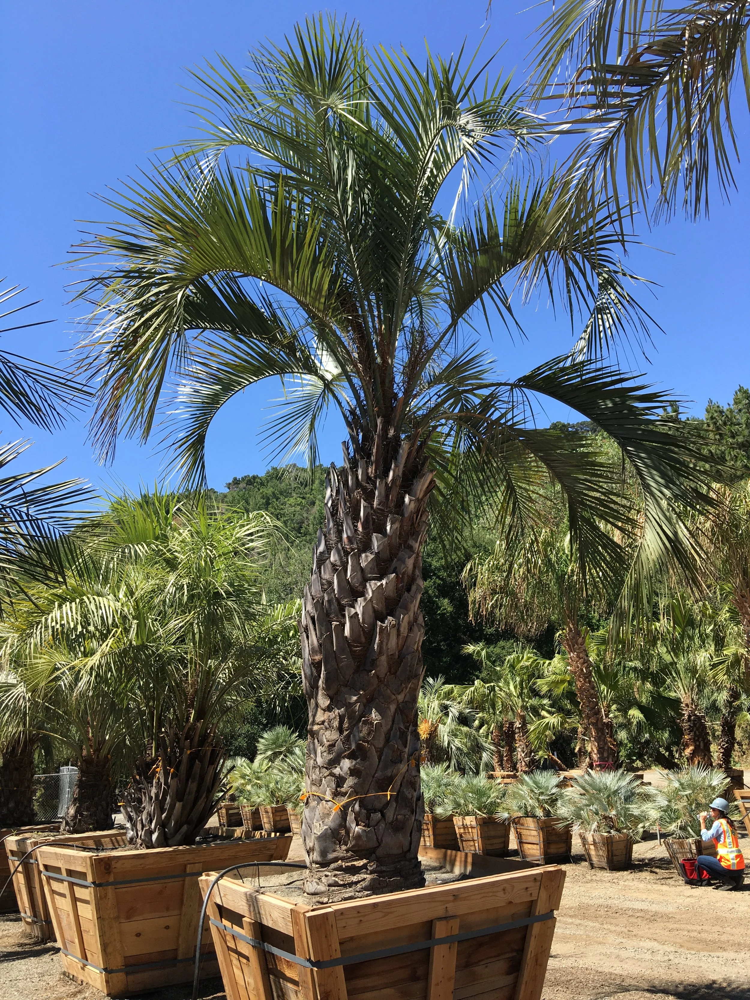
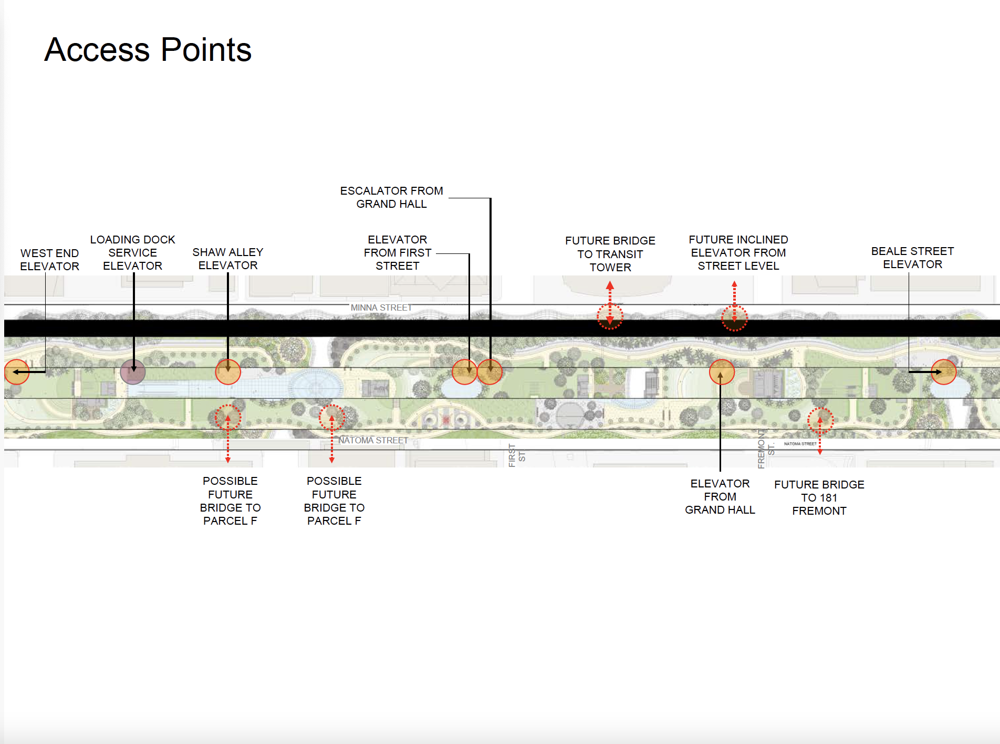
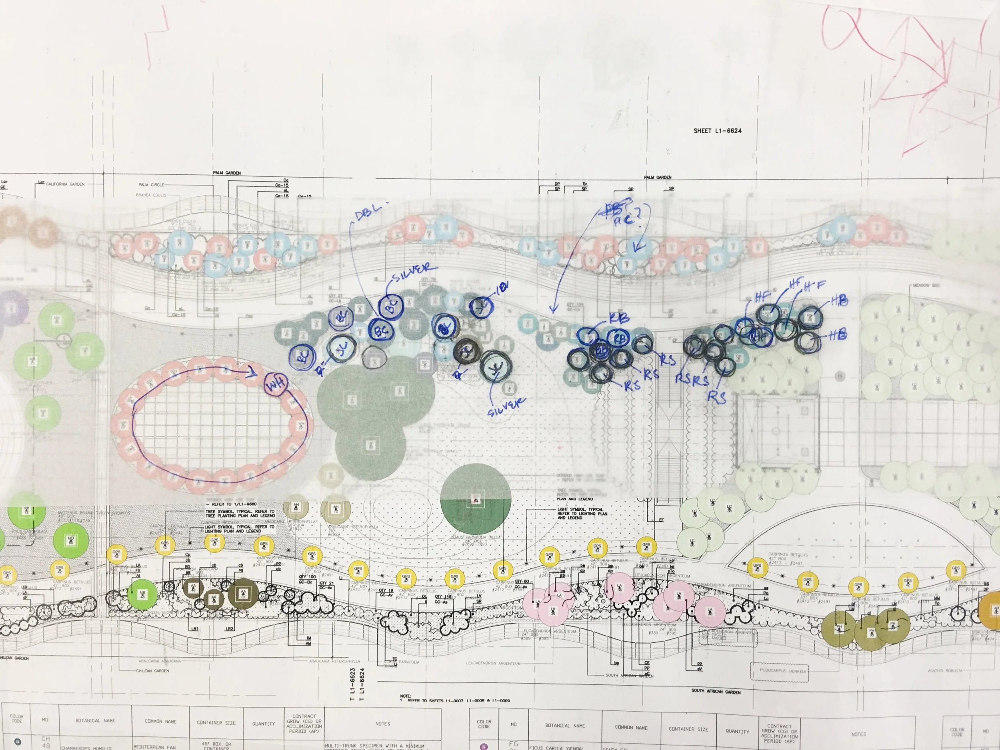
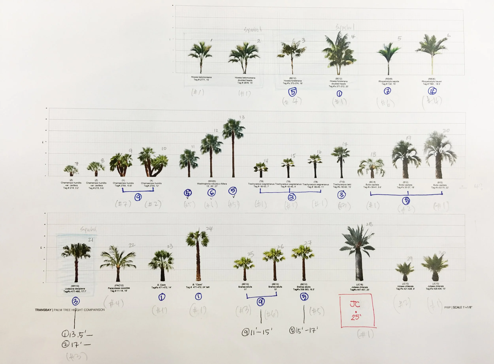
Where I learned that drawings get built.도면은 지어진다는 걸 배운 곳.